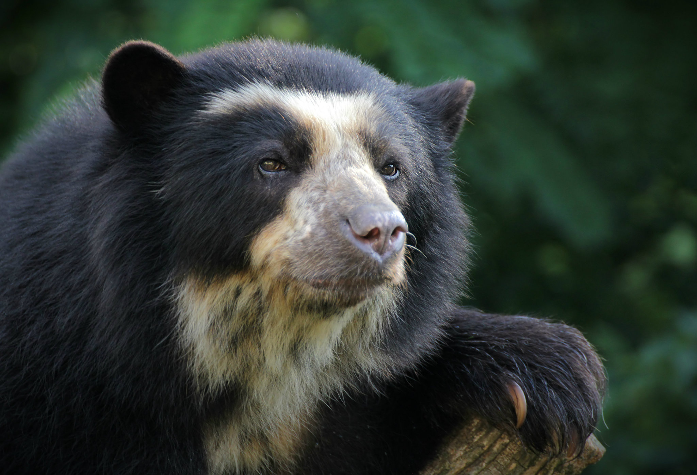
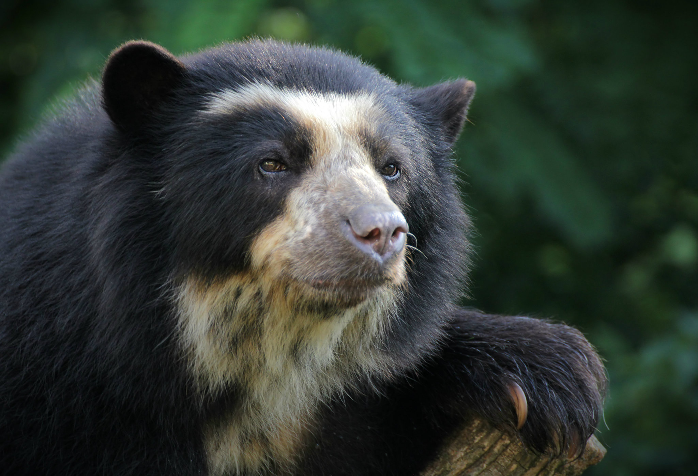

Animales |
|
Colombia tiene una gran diversidad de animales, desde exoticos reptiles, hasta hermosos insectos, ven y juntos descubramos las hermosas maravillas que oculta colombia. Haz clic en la imagen del animal que desees para obtener más información acerca de el. |
 
